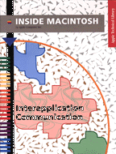

Interapplication Communication
Inside Macintosh: Interapplication Communication explains how to make your application work with other applications to give users even greater power and flexibility in accomplishing their tasks.
Inside Macintosh: Interapplication Communication provides a brief introduction to how applications work together in a cooperative environment and discusses how you can
To use this book, you should be familiar with how to respond to user events, as described in Inside Macintosh: Macintosh Toolbox Essentials.
- share data with other applications
- request information or services from other applications
- respond to scripts written in a scripting language
- allow the user to record actions in a script
- allow the user to automate repetitive tasks
Inside Macintosh is a collection of books, organized by topic, that describe the system software of Macintosh computers. Together, these books provide the essential reference for programmers, designers, and engineers. A graphic overview of Inside Macintosh appears on the inside back cover of this book.
Availability
Click below to obtain Inside Macintosh: Interapplication Communication in any of the following formats.
Book Contents
- Figures, Tables, and Listings
- Preface - About This Book
- Chapter 1 - Introduction to Interapplication Communication
- Chapter 2 - Edition Manager
- Chapter 3 - Introduction to Apple Events
- Chapter 4 - Responding to Apple Events
- Chapter 5 - Creating and Sending Apple Events
- Chapter 6 - Resolving and Creating Object Specifier Records
- Chapter 7 - Introduction to Scripting
- Chapter 8 - Apple Event Terminology Resources
- Chapter 9 - Recording Apple Events
- Chapter 10 - Scripting Components
- Chapter 11 - Program-to-Program Communications Toolbox
- Chapter 12 - Data Access Manager
- Glossary